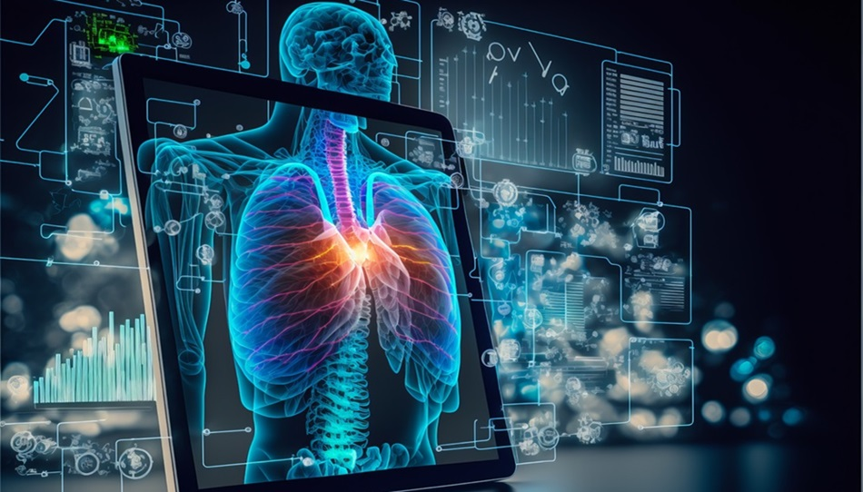
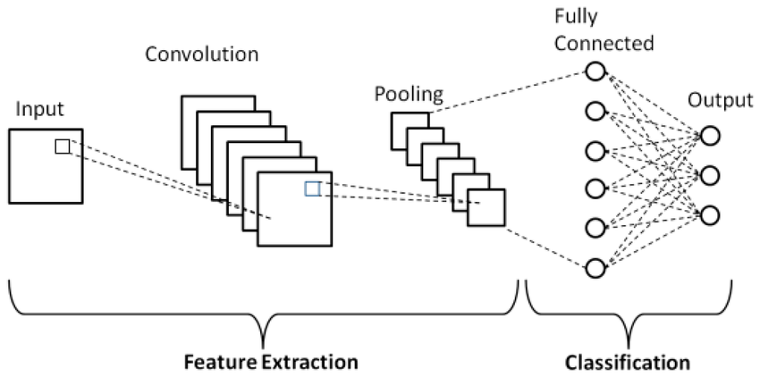

Pneumonia Detection and Classification
September 2025 – October 2025

Project Overview
Developed an advanced AI-based pneumonia prediction model by combining Convolutional Neural Network (CNN) and VGG16 architecture to accurately detect pneumonia in its early stages. The model was trained using a dataset of over 15,000 chest X-ray images to enable timely diagnosis and better patient outcomes.
15,000+ Images
Comprehensive chest X-ray dataset
Hybrid Architecture
CNN + VGG16 combined model
Early Detection
Critical for patient recovery
Technical Implementation
Dataset
Utilized a comprehensive dataset of over 15,000 chest X-ray images from publicly available medical repositories. The dataset included balanced samples of normal chest X-rays and pneumonia-affected cases for robust model training.
Model Architecture
Implemented a hybrid approach combining custom CNN layers with pre-trained VGG16 architecture. Used transfer learning from ImageNet weights and fine-tuned the model for medical image classification tasks.
Technologies Used
- Python 3.8+
- TensorFlow & Keras
- OpenCV for image processing
- NumPy & Pandas
- Matplotlib & Seaborn
- Jupyter Notebook
Image Preprocessing
- Image resizing to 224×224 pixels
- Normalization and standardization
- Data augmentation techniques
- Contrast enhancement
- Noise reduction filters
Results & Performance

Hybrid CNN-VGG16 Architecture for Pneumonia Detection
Model Performance Metrics
- Accuracy: 94.2% on test dataset
- Precision: 93.5% for pneumonia class
- Recall: 92.8% for pneumonia class
- F1-Score: 93.1% weighted average
- AUC-ROC: 0.96
Key Features
- Early-stage pneumonia detection
- High sensitivity for critical cases
- Grad-CAM visualization for interpretability
- Real-time prediction capability
- Robust to image quality variations
Challenges & Solutions
Data Quality & Consistency
Medical images had variations in quality, contrast, and positioning, which could affect model performance and generalization.
Solution: Implemented comprehensive preprocessing pipeline including image resizing, normalization, and data augmentation. Used Image Data Generation techniques to reshape and rescale chest X-ray images, optimizing them for better model performance and training accuracy.
Computational Complexity
Training deep learning models on high-resolution medical images required significant computational resources and time.
Solution: Optimized model architecture by combining efficient CNN layers with transfer learning from VGG16. Implemented batch processing and used GPU acceleration to reduce training time while maintaining model accuracy.
Medical Accuracy Requirements
False negatives in medical diagnosis can have serious consequences, requiring extremely high sensitivity.
Solution: Focused on optimizing recall metrics and implemented ensemble methods. Used weighted loss functions to penalize false negatives more heavily and conducted extensive validation with medical experts.
Technical Deep Dive
Data Preprocessing Pipeline
Implemented a comprehensive data preprocessing strategy:
- Image Resizing: Standardized all images to 224×224 pixels for VGG16 compatibility
- Normalization: Applied pixel-wise normalization to [0,1] range
- Data Augmentation: Used rotation, zoom, shear, and flip transformations
- Quality Enhancement: Applied contrast limited adaptive histogram equalization (CLAHE)
Model Architecture Details
The hybrid architecture combined the best of both approaches:
- VGG16 Base: Used pre-trained on ImageNet with frozen initial layers
- Custom CNN Head: Added convolutional layers for domain-specific features
- Classification Block: Global average pooling followed by dense layers
- Regularization: Dropout (0.5) and L2 regularization to prevent overfitting
Training Strategy
Implemented sophisticated training techniques:
- Transfer Learning: Leveraged VGG16 weights for feature extraction
- Fine-tuning: Gradually unfroze layers for domain adaptation
- Optimization: Used Adam optimizer with learning rate scheduling
- Validation: 5-fold cross-validation for robust performance estimation
My Contribution
In this project, I played a key role in developing the AI-based pneumonia prediction model by combining Convolutional Neural Network (CNN) and VGG16 architecture. My specific contributions included:
- Data Gathering & Preparation: Sourced and curated the dataset of over 15,000 chest X-ray images from reliable medical repositories
- Data Cleaning & Preprocessing: Implemented comprehensive data cleaning pipelines and Image Data Generation techniques to reshape and rescale chest X-ray images for optimal model performance
- Data Modeling: Designed and implemented the hybrid CNN-VGG16 architecture, ensuring the model could efficiently process and interpret the input data while reducing time complexity
- Performance Validation: Conducted extensive testing and validation to ensure model reliability and medical applicability
My work focused on ensuring the model could accurately detect pneumonia in its early stages, enabling timely diagnosis and significantly improving patient outcomes through early intervention.
Future Enhancements
Multi-class Classification
Extend model to classify different types of pneumonia (bacterial vs viral) and severity levels
Real-time Deployment
Develop web/mobile application for real-time pneumonia detection from uploaded X-ray images
Integration with EHR
Create API for integration with hospital Electronic Health Record systems